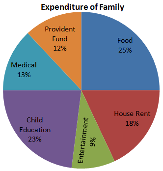
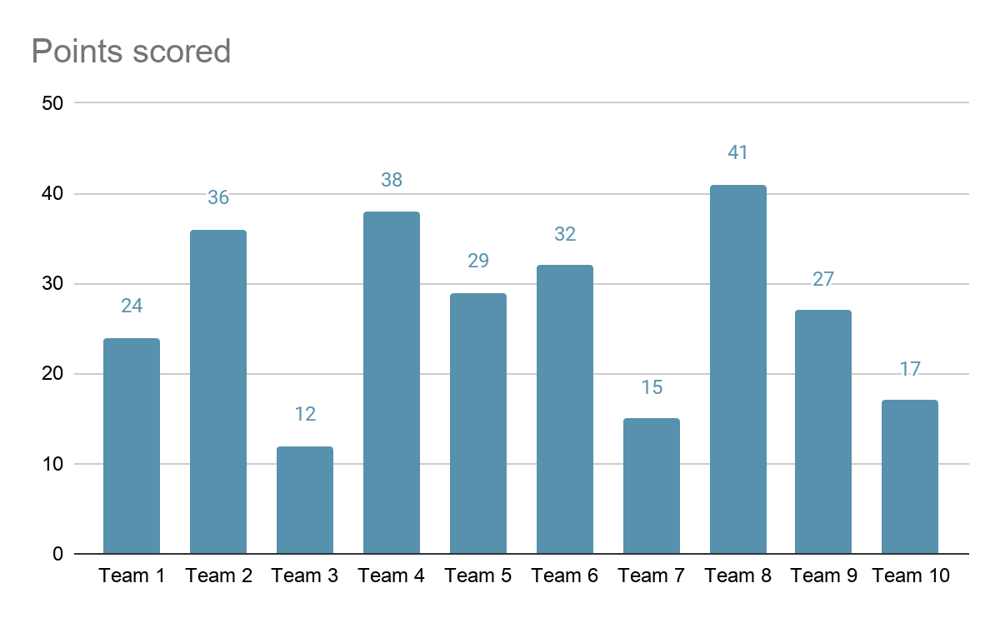
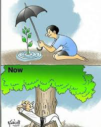

Ad Space

The provided pie chart illustrates the monthly expenditure of a family, broken down into six distinct categories. The largest portion of the family's budget is allocated to Food, which accounts for 25% or one-quarter of the total spending. This is closely followed by Child Education at 23%, highlighting the family's high priority on education.
House Rent is the third significant expense, taking up 18% of the budget. Essential long-term and contingency planning is also evident, with Medical expenses and Provident Fund (savings) accounting for 13% and 12% respectively. The smallest category of expenditure is Entertainment, which consumes 9% of the budget. In summary, essential needs—Food, Education, and Housing—make up 66% of the total spending, indicating a budget focused on priorities and responsibilities.

The bar chart displays the points scored by ten different teams in a competition. The vertical Y-axis represents the number of points scored, while the horizontal X-axis lists the ten teams, from Team 1 to Team 10.
There is a wide variation in performance. Team 8 was the clear top performer, achieving the highest score with 41 points. Team 4 and Team 2 also performed strongly, securing the second and third-highest scores with 38 and 36 points, respectively. At the other end of the scale, Team 3 had the lowest score, managing only 12 points. Other low-scoring teams include Team 7 with 15 points and Team 10 with 17 points. The remaining teams (Team 1, Team 5, Team 6, and Team 9) had mid-range scores, all falling between 24 and 32 points. Overall, the chart shows a significant performance gap between the top-tier teams and the bottom-tier teams.
Subject: Happy Birthday, [Sibling's Name]! 🎂
Hi [Sibling's Name],
Happiest of birthdays to you! I'm sending you all my love and best wishes for a fantastic day. I can't believe another year has gone by. I hope you get to celebrate and do something you really enjoy.
I'm thinking of all the fun times we've had and looking forward to many more. You're not just my sibling, but one of my best friends, and I'm so grateful to have you in my life.
I've sent a small gift to your address; it should be arriving today. Let's catch up on a video call later this evening!
Lots of love,
[Your Name]
Subject: College Update and a Small Request for Books
Dear Dad,
I hope this email finds you well and that your work abroad is going smoothly. Everything here is fine. My classes are going well, and I'm really enjoying the "Data Structures" course this semester.
As I get deeper into my engineering studies, I'm finding that some of the recommended textbooks are quite difficult to find here in India. There are a couple of specific books that my professors have highly recommended which are either unavailable or extremely expensive here. I was hoping you might be able to help.
Here are the details of the books:
I've checked, and they seem to be easily available on Amazon there. I would be really grateful if you could order them and bring them with you when you visit next month. Please let me know the cost, and I will, of course, pay you back.
No rush at all, just whenever it's convenient for you. Thanks a million for your help!
Miss you and love you,
[Your Name]
12, Park Avenue
Chennai – 600028
October 25, 2025
Dearest [Brother's Name],
I was absolutely thrilled when Mom and Dad called to tell me the news—you're the college topper! That is incredible! I am so incredibly proud of you.
I know how much hard work and how many late nights you've put into your studies. You've always been so dedicated and passionate about your subjects, and it's wonderful to see your efforts pay off in such a big way. Topping the entire college, especially in the engineering department, is no small feat, and you deserve every bit of this success.
This achievement is a testament to your intelligence and your perseverance. I hope you take a moment to celebrate and feel proud of yourself. You're not only brilliant, but you're also setting an amazing example for everyone around you.
Can't wait to see you soon and celebrate this properly. We are all so proud of you. Keep up the amazing work!
With all my love and congratulations,
[Your Name]
5B, Sunshine Apartments
Bangalore - 560001
October 25, 2025
My Dearest [Friend's Name],
I was so incredibly sorry and heartbroken to hear about the passing of your mother. There are no words to express how deeply I feel for you and your family during this time.
I will always remember your mom's kindness and her warm smile. She was such a wonderful person, and I know how much she loved you. Her presence will be deeply missed by everyone who knew her.
Please know that I am thinking of you constantly. I am here for you for whatever you need—whether it's to talk, to listen, or just to sit in silence. Don't hesitate to reach out, anytime at all.
Sending you all my love and strength during this unimaginably difficult time. Please accept my deepest sympathies.
With all my love,
[Your Name]
#42, Green Valley Layout
Chennai – 603103
October 25, 2025
Dear [Friend's Name],
Guess what? I've finally moved into my new house! The boxes are (mostly) unpacked, and I'm starting to feel settled in. It's been a lot of work, but I'm so excited about this new place.
It just wouldn't feel like home, though, without having my best friend over to celebrate. So, I'm having a small housewarming ceremony and pooja on Sunday, November 10th, at around 10:00 AM.
I would be so happy if you could come and bless my new home. We'll have the ceremony first, followed by lunch, and then we can just hang out and catch up. I really want you to be here for this new beginning. Your presence would mean a lot to me and my family.
Please let me know if you can make it. I can't wait to show you the new place!
Lots of love,
[Your Name]

This is a powerful two-panel cartoon that contrasts the present ("Now") with the future, illustrating the long-term benefits of conservation and environmental care.
The top panel, labeled "Now," shows a young boy kneeling on the ground. He is carefully planting a small, green sapling in a puddle of water, signifying its need for nurture. The boy is holding an umbrella over the tiny plant, shielding it from what is implied to be a harsh sun, even though he himself is exposed. This act represents sacrifice, foresight, and the effort required to protect and care for nature.
The bottom panel shows the future outcome of this selfless act. The sapling has grown into a large, magnificent tree with a thick trunk and a lush, wide canopy of green leaves. Under the generous shade of this very tree, an older man—presumably the same boy, now grown old—is relaxing peacefully on a lounge chair. The image beautifully conveys the message of "you reap what you sow." The small sacrifice made in the present leads to great comfort and reward in the future, highlighting the importance of planting trees for ourselves and for the generations to come.
Ad Space